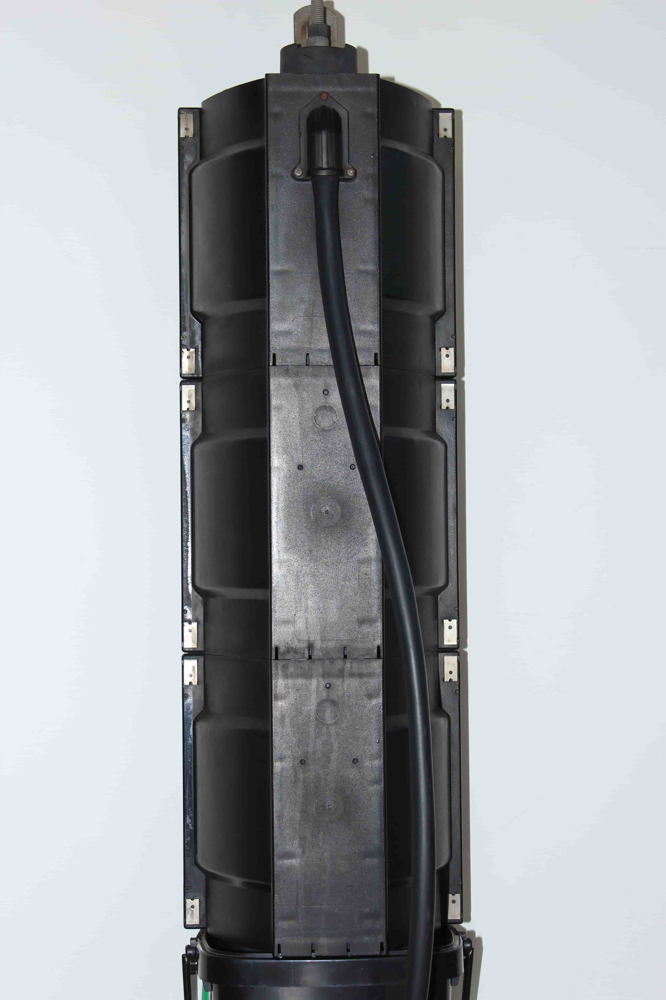

These Aldridge Traffic Systems lights are very similar to the Aldridge Electrical lights that came beforehand, although most lack vertical 'ridges,' and most don't have branding style of AEI lights on the back. The branding has changed to 'Aldridge Traffic Systems,' of course.
There are two revisions of this light: The earlier revision having branding with a 'blocky' font, and the later revision having a more rounded font. (I'm unsure if the first revision is simply just the AEI design copied with branding changed.)
Both revisions have the 'Aldridge Traffic Systems' logo moulded onto the front as well as on the back, on the housing below where the wires come out (Single aspect signals hence do not have branding on the back.)
12" variants are not very common, although they are more common in states such as South Australia. The only common use of them in Victoria is on the metropolitan railway network.
| Front view | Back view | Side view | Internal view |
|---|---|---|---|
|  | |
||
| Images above are from my own collection. Interestingly, my signal doesn't have any 'ATS' branding on the back - Seems to be a rare occurence. | |||
| 8" (200mm) variant | ||
|---|---|---|
| Ball signal | ||
| Clayton Rd/Dandenong Rd (Princes Hwy), Clayton, VIC. | ||
I have not been able to find any examples of a 12" variant, although I'm certain they exist.


{kind=link}
{kind=link}
{kind=link}
{kind=link}
{kind=link}
{kind=link}
{kind=link}
{kind=link}
{kind=link}
{kind=link}
{kind=link}